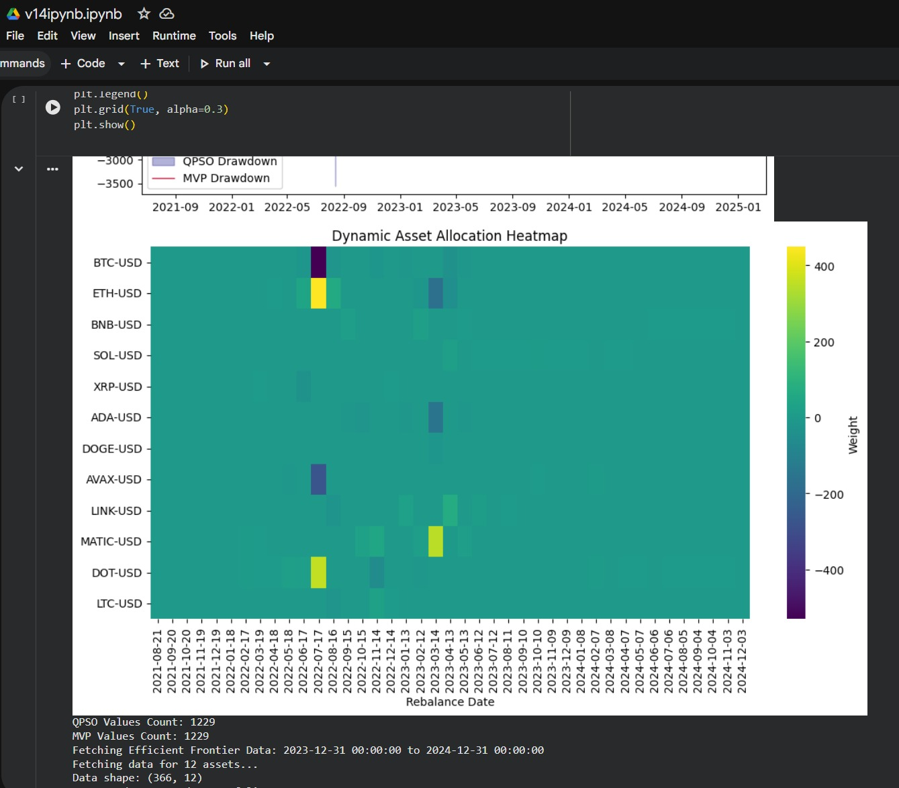
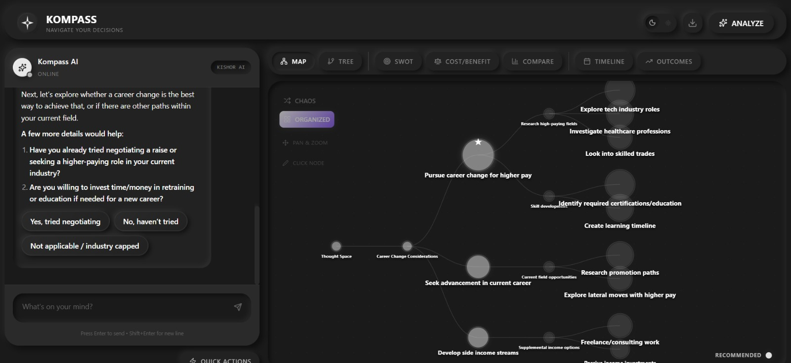

Projects
The Quantum Portfolio Optimizer

Project Overview
Built an advanced portfolio optimization system using Quantum-Inspired Particle Swarm Optimization (QIPSO) to find optimal asset combinations in cryptocurrency markets that standard algorithms typically miss. This project represents the intersection of quantum computing principles and financial engineering, demonstrating how quantum-inspired algorithms can solve complex optimization problems more efficiently than traditional methods.
The optimizer analyzes multiple cryptocurrencies simultaneously, considering factors such as historical returns, volatility, correlation matrices, and risk constraints to generate optimal portfolio allocations. The quantum-inspired approach allows the algorithm to explore a larger solution space and escape local optima more effectively than conventional optimization techniques.
Technologies and Skills Used
- Python
- Quantum Computing Principles
- QIPSO Algorithm Implementation
- Financial Mathematics
- Data Analysis and Visualization
- NumPy and Pandas
- Matplotlib for Visualization
- API Integration for Market Data
Key Features
- Quantum-inspired particle swarm optimization for superior convergence
- Multi-asset allocation for diversified crypto portfolios
- Comprehensive performance analysis and backtesting capabilities
- Integration of quantum logic principles with traditional finance models
- Real-time market data integration
- Risk-adjusted return optimization
- Interactive visualization of portfolio performance metrics
AIUB Course Tracker & Automation

Project Overview
Developed a comprehensive automation solution for AIUB course registration that eliminates the frustrating manual refresh cycle during course registration periods. The system monitors course availability in real-time and automatically handles the complex token management system, making the registration process seamless and efficient.
This project was born from personal experience with the challenges of AIUB's registration system. By leveraging web automation and session management techniques, the tracker provides students with a significant advantage during the competitive registration period, saving hours of manual work and reducing registration-related stress.
Technologies and Skills Used
- Python
- Selenium WebDriver
- Web Scraping Techniques
- Session Management
- Real-time Tracking and Monitoring
- Browser Automation
- HTTP Requests and Cookies Handling
- Multi-threading for Concurrent Operations
Key Features
- Real-time course availability monitoring with instant notifications
- Automatic token handling and authentication management
- Persistent session management to maintain login state
- Browser automation with Selenium for reliable interaction
- Configurable monitoring intervals and target courses
- Error handling and automatic recovery mechanisms
- User-friendly interface for configuration and monitoring
Kompass - The Decision-Making App

Project Overview
Designed and developed Kompass, an intelligent decision-making application that helps users make better choices by quantifying variables and removing emotional bias from important decisions. The app transforms subjective feelings into objective data points, allowing users to analyze decisions through a rational, data-driven framework.
The project focuses heavily on user experience design, creating an interface that feels intuitive and approachable rather than overwhelming like traditional decision matrices. Kompass guides users through the decision-making process step by step, helping them identify relevant factors, assign weights, and visualize the outcomes to reach clarity on difficult choices.
Technologies and Skills Used
- UI/UX Design Principles
- JavaScript (ES6+)
- HTML5 and CSS3
- Data Visualization Libraries
- Algorithm Design for Decision Scoring
- Frontend Development
- Responsive Web Design
- Local Storage for Data Persistence
Key Features
- Variable quantification system for objective decision analysis
- Intuitive and sleek user interface designed for ease of use
- Data-driven decision framework based on weighted criteria
- Analysis paralysis solution through structured methodology
- Visual comparison of decision options with charts and graphs
- Customizable weighting system for different priorities
- Decision history tracking for future reference
- Mobile-responsive design for decisions on the go
CHA-BARI - Tea Store

Project Overview
Designed and developed a tea store web application with a focus on creating an inviting and intuitive shopping experience. The project transforms the traditional tea buying process into a modern digital experience, combining elegant design with practical e-commerce functionality.
The application emphasizes user experience design, creating an interface that feels warm and approachable while maintaining professional e-commerce standards. The store guides customers through product discovery, selection, and purchase with a seamless flow.
Web Portfolio

Project Overview
Designed and developed a personal portfolio website to showcase projects, experience, and skills. The portfolio serves as a central hub for professional presence, presenting work in a clean and organized manner.
The project focuses on clean HTML structure, semantic markup, and CSS styling following a strict style guide with no inline styles, proper selector ordering, and consistent formatting conventions.